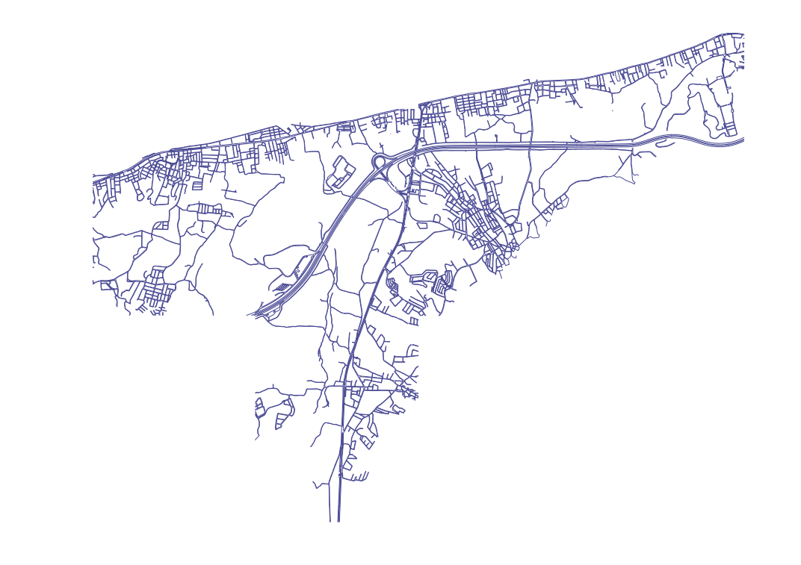

KGM 2. Bölge Devlet Yolları
2025 Yıllık Ortalama Günlük Trafik (YOGT) Hacim Haritası Özeti
Güzergahlara Göre Günlük Trafik (Hafif ve Ağır Taşıt)
Güzergahlara Göre Toplam Günlük Trafik (YOGT)
Şehir İçi Yollar
Güzelbahçe şehir içi yol ağının harita görünümü

Güzelbahçe Ulaşım Altyapısı
İlçeyi İzmir geneline bağlayan ve iç ulaşımı sağlayan temel karayolları analizleri
1. İzmir - Çeşme Otoyolu (O-32)
- Güzergah Tipi: Güzelbahçe Geçişi
- Şerit Yapısı: 2x3 (3 gidiş, 3 geliş) ve acil emniyet şeritli otoyol standardı.
- Şerit Başına Kapasite: İdeal koşullarda 2.000 - 2.400 otomobil eşdeğeri/saat.
- Toplam Kapasite: Tek yönde saatte 6.000 - 7.200 araç. Günlük bazda 80.000 - 100.000 araçlık yüksek trafik hacmi için tasarlanmıştır.
2. D.300 Devlet Yolu (Mithatpaşa Cd.)
- Güzergah Tipi: Eski Çeşme Yolu / Sahil Kesimi
- Şerit Yapısı: İlçe merkezinde 2x1 veya bazı bölünmüş noktalarda 2x2 şeritli ana arter.
- Durum & Tıkanıklık: Özellikle hafta sonları liman çevresi ve balık hali bölgesindeki yoğunluk sebebiyle teorik sınırına (şerit başına 1.200 - 1.500 araç/saat) ulaşıp tıkanma noktasına gelmektedir.
3. Yeni 75. Yıl Cumhuriyet Bulvarı
- Güzergah Tipi: Alternatif Dağ Yolu
- Şerit Yapısı: 24,5 metre genişliğinde, 2x2 (çift gidiş, çift geliş) bölünmüş yol.
- Kapasite Katkısı: D.300 / Mithatpaşa Caddesi'nin kapasite yetersizliğini çözmek amacıyla inşa edilmiştir. Sahil yolundaki günlük trafik yükünü önemli ölçüde hafifleterek iç ulaşımdaki kapasiteyi yaklaşık iki katına çıkarmıştır.
4. 300-01 Otoyol Bağlantı Yolu
- Güzergah Tipi: Otoyol Ayrımı - Güzelbahçe Girişi (9 KM)
- Fonksiyon: Çeşme Otoyolu'ndan Güzelbahçe ve Urla bölgelerine geçişi sağlayan toplayıcı-dağıtıcı bağlantı yolu.
KGM Resmi Trafik Hacim Verisi (YOGT)
KGM 2. Bölge istatistiklerine göre, bu 9 km'lik otoyol ayrım kesiminden günlük ortalama 15 bin araç Güzelbahçe yönüne giriş/çıkış yapmaktadır.
Günlük Araç Hacmi ve Güvenli Kapasite Karşılaştırması (Araç/Gün)
Yoğunluk / Kapasite Doluluk Oranı (V/C %)
Verilerden Elde Edilen Bulgular
Karayolu trafik yükü
2025 YOGT: Güzelbahçe - Menderes 76.779, Narlıdere - Güzelbahçe 66.919 taşıt/gün; ağır taşıt oranı %9,7.
En yüksek hacimler ilçeyi Menderes ve Narlıdere yönüne bağlayan kesimlerdedir; 300-01 bağlantısında 15.064 taşıtın 13.983'ü otomobildir.
Karayolu trafiği ilçeyi çevre ilçelere bağlayan kesimlerde yoğunlaşmakta; bağlantı yolunda özel otomobil kullanımı baskın görünmektedir.
Sahil aksının kapasitesi
Mithatpaşa Cd. V/C: rutin %72, yaz/pik %104; diğer akslarda yaz/pik %83–%88.
Yaz/pik dönemde dört akstan yalnızca sahil yolu teorik kapasiteyi aşmaktadır; paralel aks olan 75. Yıl Bulvarı'nın yalnızca 1. etabı tamamlanmıştır.
Sahil aksı mevsimsel bir darboğazdır; 75. Yıl Cumhuriyet Bulvarı'nın 2. ve 3. etapları bu aksın yükü açısından önem taşımaktadır.
Veri Kaynağı (Kaynakça)
Karayolları Genel Müdürlüğü (KGM) 2025 Yılı 2. Bölge Trafik Hacim Haritası